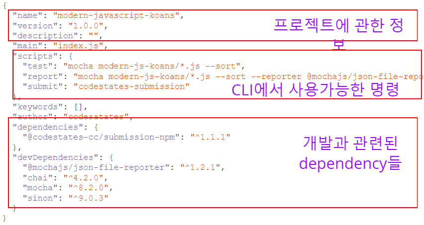

npm 모듈을 활용하기 위해 해당 모듈에 대한 정보를 담은 파일 즉, 프로젝트 전반에 관한 정보가 들어있다.

이러한 package.json이 필요한 이유는 여러명이 협업을 할 때 협업자에게 해당 프로젝트가 어떤 모듈이 필요하고 프로그램을 어떻게 실행시킬지를 알려주는 설명서 같은 역할을 하기 때문이다.
직접 실행과 관련 있는 의존성(dependency) 모듈이 적혀 있다.
JSON 형식에서 key에 적힌 것은 모듈 이름이고 value는 버전이다.
프로그램 실행과 관계없는 오로지 개발을 위해 필요한 의존성(dependency) 모듈이 적혀 있다.
JSON 형식에서 key에 적힌 것은 모듈 이름이고 value는 버전이다.
scripts 항목은 CLI에서 사용 가능한 명령을 기술하며 이를 npm script라고 부른다.
CLI에서 실행할 때 아래와 같은 명령어로 실행한다.
npm run <scripts_key>
npm은 Node Package Manager로 필요한 모듈을 다운로드할 수 있는 모듈들이 모여있는 모듈 스토어이다.
install명령어는 package.json에서 필요하다고 하는 모듈을 다운로드하는 명령어이다.
npm install
install이 완료되면 node_modules 디렉토리가 생긴 걸 확인할 수 있다.
package.json에 없는 모듈을 다운받으려면 install 명령어 뒤에 해당 모듈의 다운로드 형식에 맞게 입력하면 된다.
npm install <module>
--save 옵션은 package.json의 dependency 항목에 모듈을 추가한다.
npm install --save <module>
--save-dev 옵션은 package.json의 devDependencies 항목에 모듈을 추가한다.
npm install --save-dev <module>